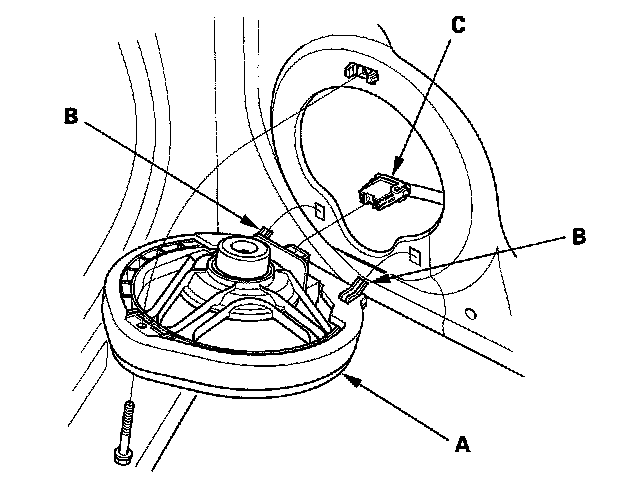
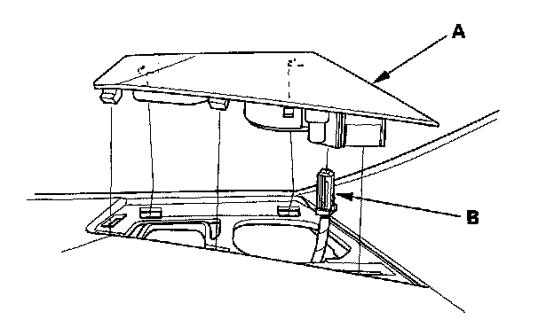
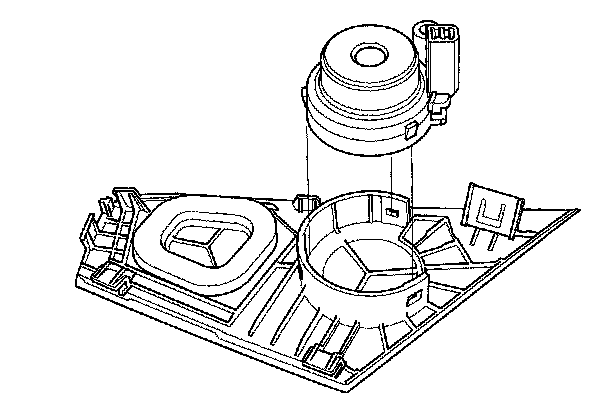
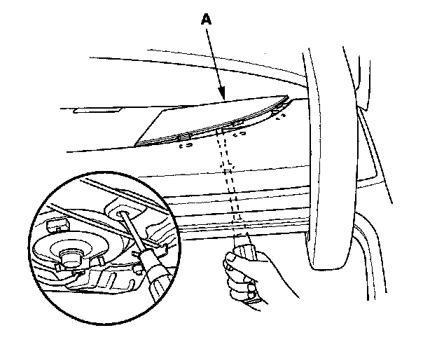
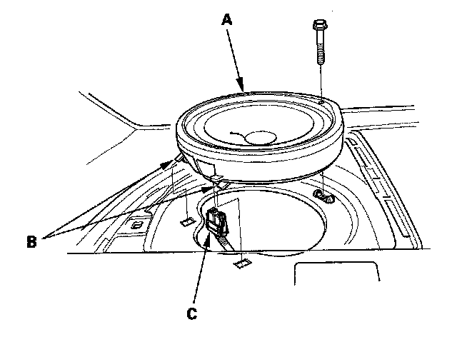
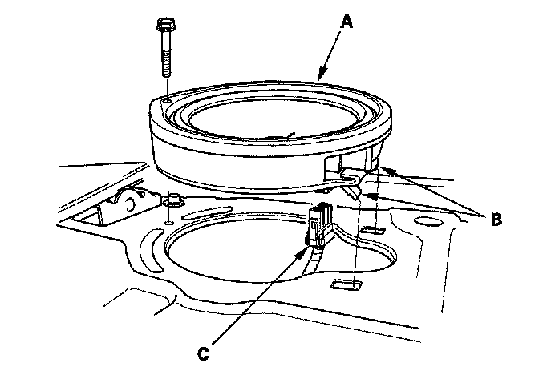
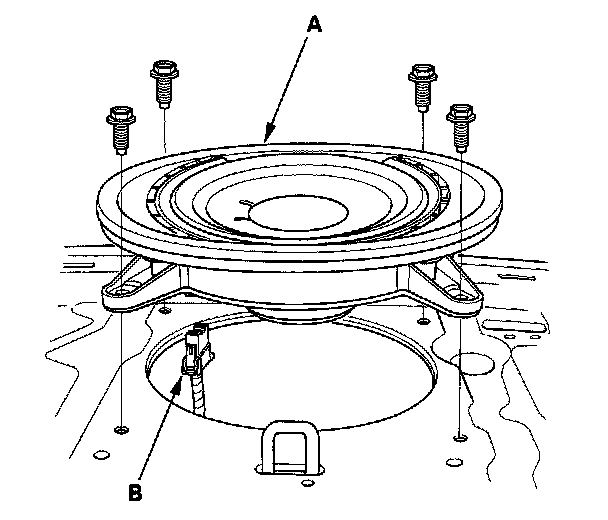

Speaker: Service and Repair
Speaker ReplacementFront Door Speaker
1. Remove the front door panel.

2. Remove the screw. Then lift the speaker (A) straight up to release the lower clips (B).
3. Disconnect the 2P connector (C), and remove the speaker.
4. Install the speaker in the reverse order of removal.
Tweeter

1. Carefully pry the tweeter grille (A) out of the dashboard. Be careful not to damage the tweeter grille and the dashboard.
2. Disconnect the 2P connector (B) from the tweeter.

3. Remove the tweeter speaker from the speaker grille.
4. Install the speaker in the reverse order of removal.
Rear Speaker (4-door model)

1. Remove the rear speaker grille (A).

2. Remove the screw. Then lift the speaker (A) straight up to release the clips (B).
3. Disconnect the 2P connector (C), and remove the speaker.
4. Install in the reverse order of removal.
Rear Speaker (2-door model)
1. Remove the rear shelf.

2. Remove the screw. Then lift the speaker (A) straight up to release the clips (B).
3. Disconnect the 2P connector (C), and remove the speaker.
4. Install in the reverse order of removal.
Subwoofer
1. Remove the rear shelf.

2. Remove the four mounting bolts from the subwoofer (A).
3. Disconnect the 2P connector (B), and remove the subwoofer.
4. Install in the reverse order of removal.